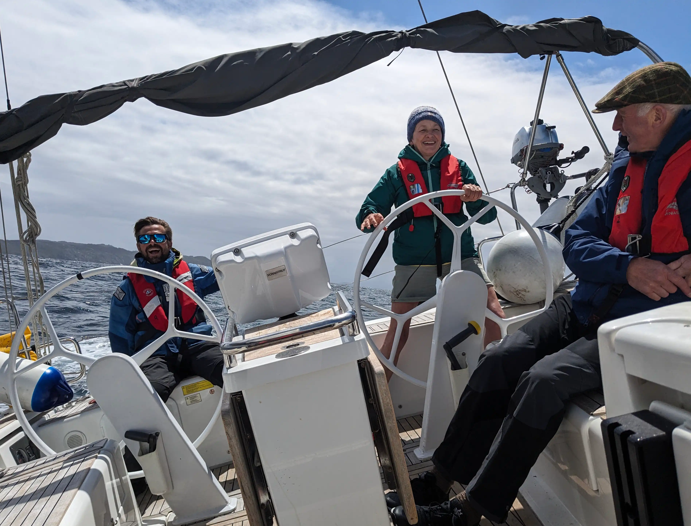
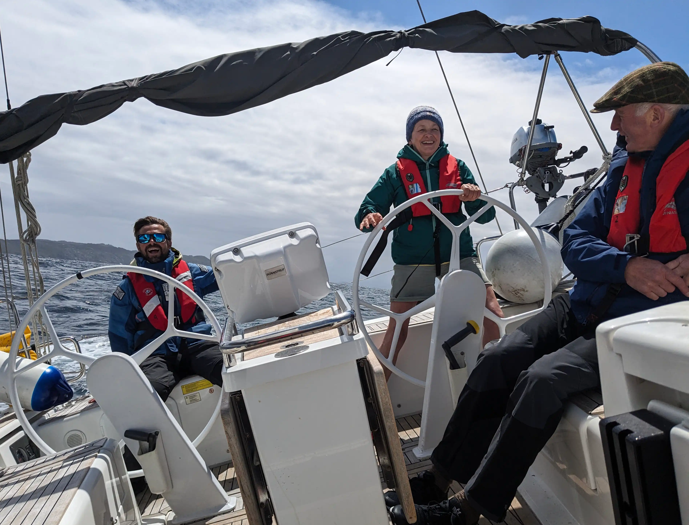
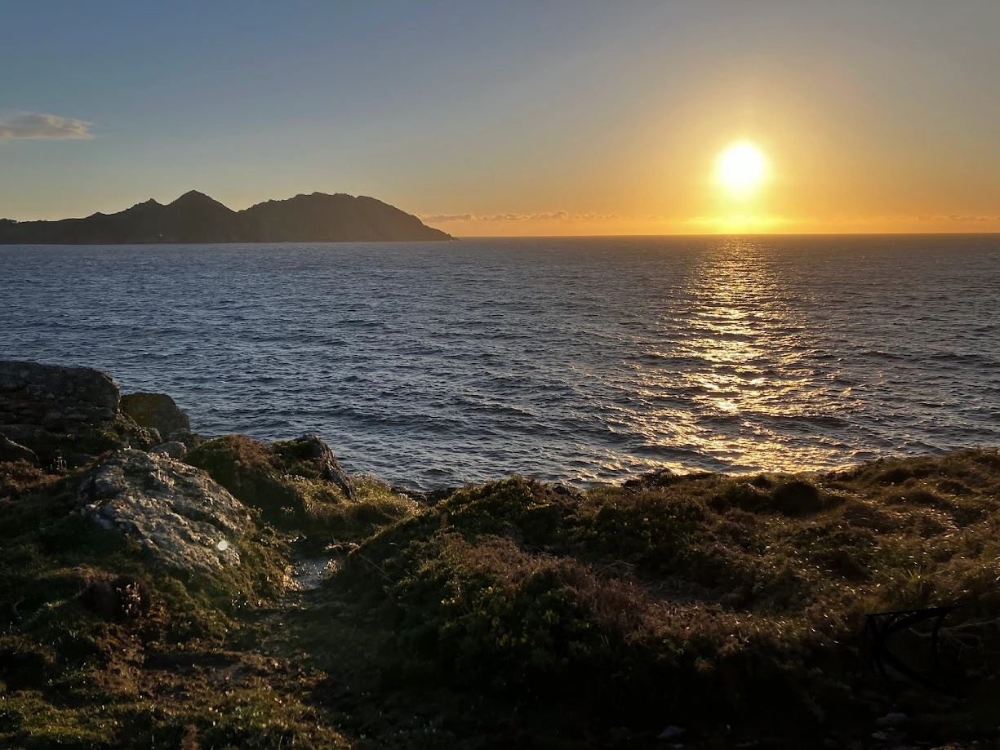
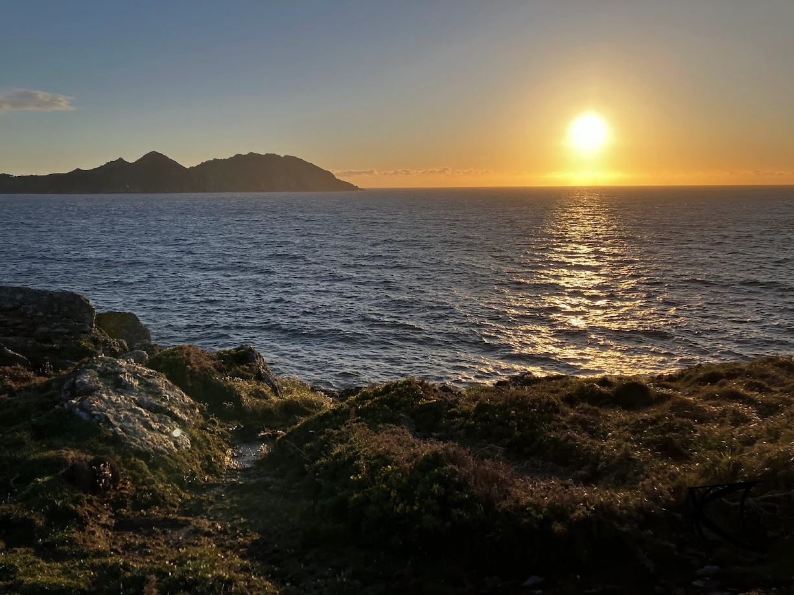

5-day course delivered exclusively by Spain Sailing in the Atlantic waters of the rugged Galician
coast.
Tailored to meet the needs of real world cruising skippers, based on years of experience, it is much
more than just a basic crew course or “box ticking” exercise.
Onboard our 40ft Sailing Cruiser ‘Santa Marta’ learn the seamanship skills needed to become a
confident
crew member, a reliable watch-keeper, and an asset in emergency situations.
Course includes live recovery of a man overboard, night-time watch-keeping and use of spinnaker
poles,
all whilst exploring the incredible coves and inlets of the Spanish Rias.
Satisfactory completion of the course leads to a ‘Crew’ certificate which you can present to any
skipper
for whom you wish to work. It lists all that you have learned and experienced.

Single occupancy in double cabin £750
Double occupancy in double cabin £600 per person
2025 Course start dates - courses are all Monday to Friday, please contact us to confirm availability and to
book (other dates may also be available):
Monday 1st September
Monday 8th September
Monday 22nd September
Monday 29th September
Monday 13th October
Monday 20th October
Monday 3rd November
Monday 10th November
Monday 24th November
Monday 1st December
Monday 15th December
 

Tom will be your instructor. He is rated RYA Yachtmaster Instructor and he has many years teaching experience at sailing schools across the globe. Tom has sailed to South America, crossed the Atlantic single-handed and competed in the hugely challenging Fastnet Race. Residing in Galicia, Tom is very familiar with the Rias Baixas region and speaks Spanish fluently.
The idea for the Long Distance Yacht Crew course developed during many years of teaching and tens of thousands of miles of cruising onboard sailing yachts. Willing volunteers have always been pretty easy to find but good, capable crew members are few and far between. Most crewing courses only focus on the basic skills needed to be useful on a weekend day-sail in favourable conditions. And then immediately advance on to skippering roles. The problem here is that everyone becomes a “qualified skipper” before they’ve really put the time in and learned the real, practical skills of good seamanship. The Long Distance Yacht Crew syllabus is based on what skippers would want their crew members to have experience of. Especially if embarking on a delivery or a longer cruise to an as yet undiscovered destination.


People with little or no sailing experience who want to learn new skills and have an adventure
People thinking about working in the sailing industry
People looking to develop their RYA Competent Crew skills
People thinking about becoming sailing yacht skippers
Solo travellers
Boat hitch-hikers
Adventurers and outdoor enthusiasts


The Rias Baixas area contains everything we need, from open Atlantic rollers, sheltered coves and anchorages. Tom’s philosophy when teaching is that everyone learns better when they feel comfortable and relaxed. He strives to create an environment in which everyone feels happy to have a go and learn from their mistakes in a friendly and non-judgemental atmosphere. The LDYC course is not a “box-ticking” exercise. It's an opportunity to gain real, practical experience in Europe’s most interesting sailing grounds.
 



We supply all training equipment and bedding, and all food and drink except for Tuesday and Thursday evenings which will be spent exploring the towns of Baiona and Combarro. You’ll need to bring personal equipment such as a notepad, pen, head torch, gloves for handling ropes, warm clothes, waterproofs, sunglasses and suncream.
Following the completion of the LDYC course, the qualification can be upgraded from ‘Crew’ to ‘Second Mate’ by participating in a qualifying passage of 150 nautical miles with Tom on board the Spain Sailing vessel.
Our yacht 'Marta' is a 42ft Beneteau Oceanis Clipper 423 sailing cruiser with four double cabins, three heads (all with showers), and a well-equipped galley.